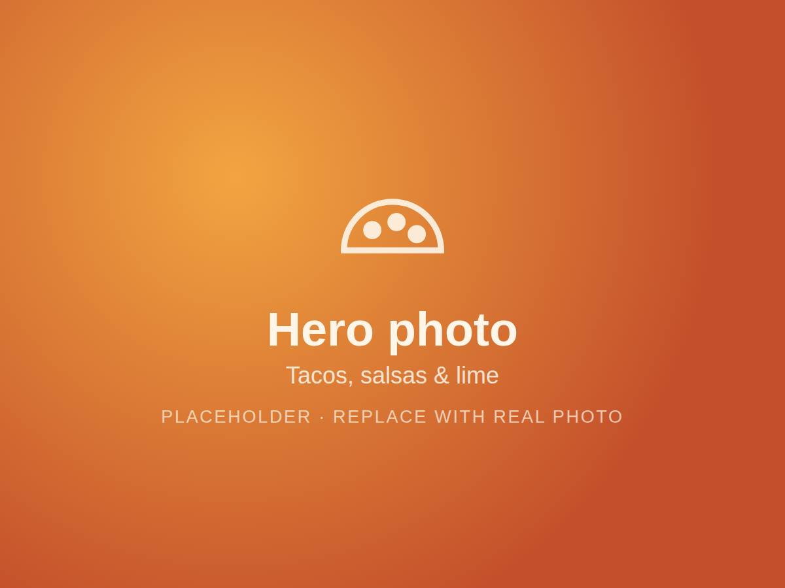
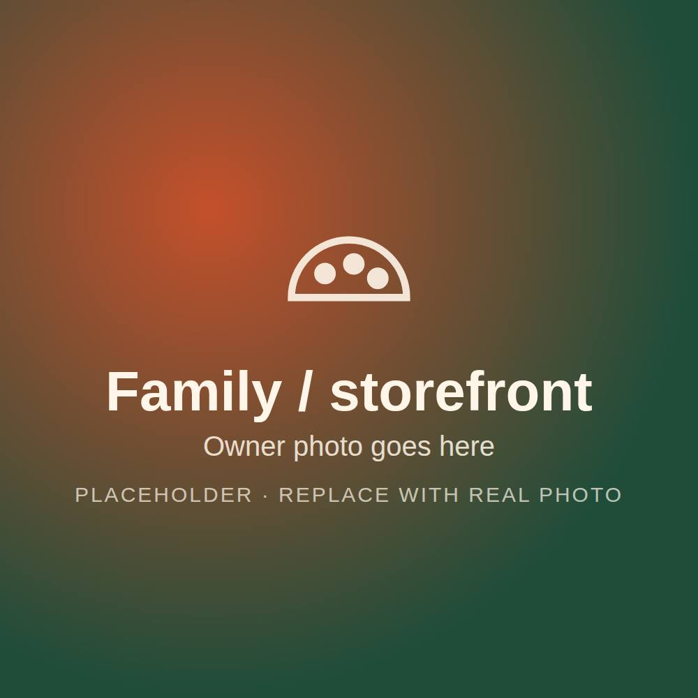

Queen Creek, Arizona
Taqueria Mis Amigos
Family-made tacos & breakfast burritos in Queen Creek
(480) 458-5571 · 20905 E Ocotillo Rd


A family kitchen, open to the neighborhood
Taqueria Mis Amigos is a small, family-run spot in the Queen Creek Town Center area. We cook the way we cook at home: fresh tortillas off the plancha, meats seasoned and grilled to order, and salsas made in-house every morning.
Mornings start with breakfast burritos and chorizo and egg plates. By lunch the grill is full of carne asada and al pastor. No shortcuts, no chain recipes, just the food we grew up on.
Whether you grab a seat inside, sit out on the patio with your dog, or call ahead for takeout, you'll be treated like a friend. That's the whole idea behind the name.
What people say
-
The real deal. Homemade flavor you just can't find at the chains.
— Local reviewer
-
The breakfast burritos are worth the drive, and the salsas are the best in town.
— Local reviewer
-
A true family place. They're warm and welcoming, and service is quick even when it's packed.
— Local reviewer
-
Great food at great prices. So glad they reopened!
— Local reviewer
Hours & location
20905 E Ocotillo Rd
Queen Creek, AZ 85142
(480) 458-5571
Good to know
- Dine-in
- Takeout
- Outdoor patio
- Kid-friendly
- Dogs OK on patio
- Wheelchair accessible
- Free parking
- Cards accepted